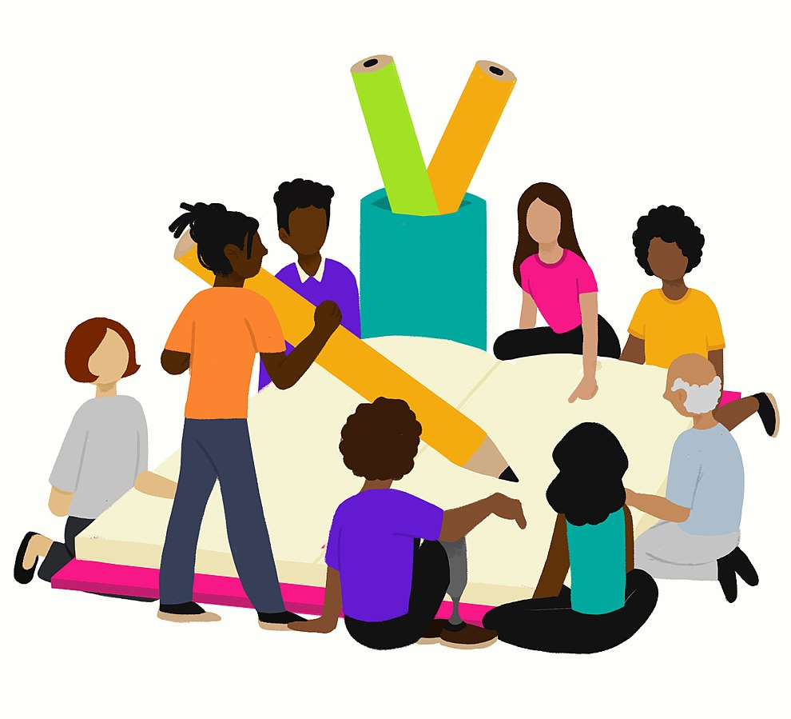

Qual o papel da escola diante da violência?
Compreendendo a escola enquanto espaço público comum e os estudantes como seres humanos sociais, o processo formativo nesta instituição requer uma gestão com participação social e gestão democrática. A aprendizagem e o desenvolvimento da cidadania dos estudantes será decorrência da efetiva participação deles em todos processos vivenciados na instituição formadora. Tal perspectiva está ancorada nos estudos de educadores e especialistas como: Vitor Henrique Paro (2012), Egeslaine de Nez e Warley de Souza (2018), Mara Regina Lemes de Sordi, Regiane Helena Bertagna e Margarida Montejano da Silva (2016), entre outros.
Na escola brasileira, manifestam-se e apresentam-se dois movimentos e projetos que expressam as contradições da sociedade brasileira estruturalmente desigual e as pretensas promessas de superação, especialmente para as escolas que atendem estudantes de realidades periféricas: o crescimento da violência e a militarização das escolas.
Para Vera Iaconelli (2024), não há lugar seguro para uma hoje. Seja caminhando na rua, seja pela “bala perdida” na sala de casa, seja no elevador do prédio da patroa da mãe, a ameaça a que estão submetidas essas pessoas em nossa sociedade é onipresente. As violências acontecem todos os dias, em todas as instituições de ensino, sendo elas privadas ou não, porque o encontro com a diversidade – marca do ambiente escolar – está sujeito a isso. Mas existem políticas mais ou menos eficientes para lidar com o problema.

Título: Planejamento coletivo para enfrentar os conflitos
Fonte: Prosa (2021)
A participação da comunidade na gestão escolar fortalece uma postura atenta e sensível diante dos fenômenos sociais que impactam a convivência, a aprendizagem e a formação dos estudantes. A escola não existe isolada: educa em diálogo constante com a comunidade e a cidade, promovendo um ambiente de trocas e crescimento mútuo. Não se trata de vigiar ou militarizar, mas de cultivar um espaço que acolha a diversidade e enfrente desafios com escuta e cooperação. A responsabilidade pela construção de uma educação democrática e inclusiva é de todos nós, seja pela ação ou pela omissão. Exigir políticas públicas que integrem educação, geração de renda e emprego é essencial para alcançar um país mais justo e igualitário.
Assumimos e afirmamos este posicionamento político-pedagógico pois, segundo recente levantamento do UOL (Ferraz, 2024), já existem 792 colégios estaduais e federais – inclusive alguns particulares – espalhados pelo país com gestão militar completa ou parcial. Este modelo de escola está alinhado com outros movimentos autoritários, conservadores, religiosos, antidemocráticos e antipopulares. É necessário ter a consciência política de que os desafios da educação, sejam de aprendizagem, gestão, cidadania ou cultura da paz, não serão resolvidos com militarização, repressão, disciplina ou gestão vertical e autoritária.
Uma instituição formadora precisa promover uma gestão do planejamento e da avaliação calcada na participação e na emancipação de todos os segmentos e estudantes da instituição escolar. “Só existirá democracia no Brasil no dia em que se montar no país a máquina que prepara as democracias. Essa máquina é a da escola pública”, disse Anísio Teixeira em seu livro Educação para a Democracia, de 1936.
Paulo Freire, patrono da educação brasileira, em sua obra Pedagogia da Autonomia (2019) aponta, também, as posturas que o ensinar exige, constituídas especialmente pela escuta, a disponibilidade para o diálogo, o querer bem aos educandos e o reconhecimento do caráter ideológico da educação e de seu potencial como um processo de intervenção no mundo.
A escola é uma instituição da sociedade e é nela que precisamos aprender a nos organizar, a participar, a debater, a praticar a convivência, a respeitar o saber e as concepções do outro, a escutar na diferença e a praticar o exercício da democracia e da cidadania. As escolas e as instituições de ensino superior precisam ser o modelo de instituição formadora em prol de sociedades participativas e democráticas, contrapondo-se ao modelo autoritário, de controle e de desempenho atualmente em desenvolvimento nas redes e instituições.
Partindo deste entendimento de que a escola é o espaço comum público de aprendizagens na diversidade, tanto dos conhecimentos científicos quanto da cidadania e da democracia, iremos na sequência abordar a participação de todos os segmentos na gestão escolar.